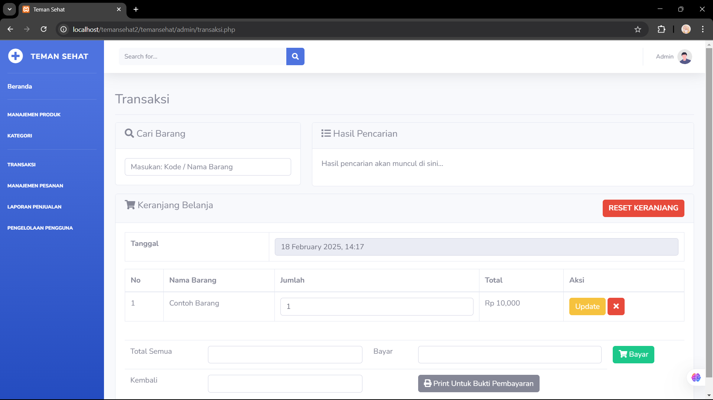
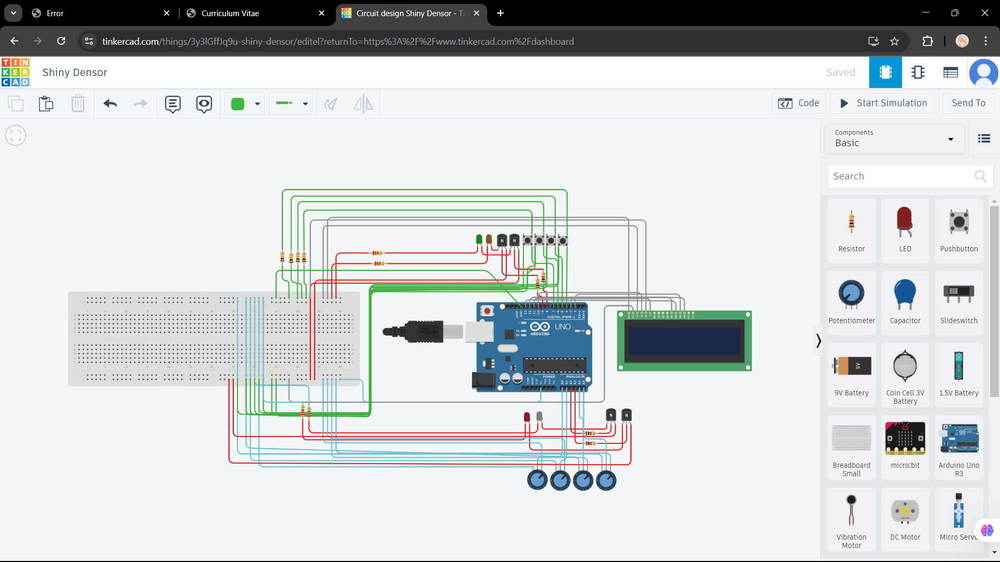

Nadran Islamy Putra Holil Nasution
Web Developer | HTML, CSS, JavaScript, ReactJS, NodeJS
Hello, I'm Nadran, a passionate web developer with experience in creating modern, responsive websites. I specialize in HTML, CSS, and JavaScript. I'm always eager to learn and grow in the tech industry, and I am excited about contributing to innovative projects.
Education
- Universitas Sumatera Utara (2024 - Present)
- SMA Negeri 2 Plus Panyabungan (2021 - 2024)
- MTsN 2 Mandailing Natal (2018 - 2021)
- SDS 117 Islam Terpadu Adnani (2012 - 2018)
Projects

Project 1
Membuat Website Untuk Kasir Apotek

Project 2
Membuat program kasir menggunakan bahasa c

Project 3
Membuat Smart Power Strip Sederhana
Contact
Email: nadranislamy@gmail.com
Phone: +622 3456 7890